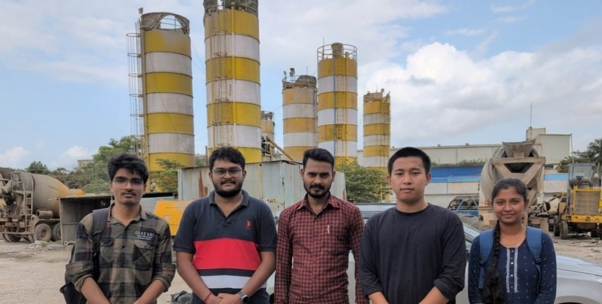
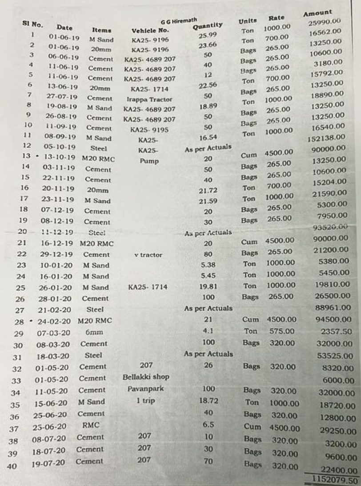
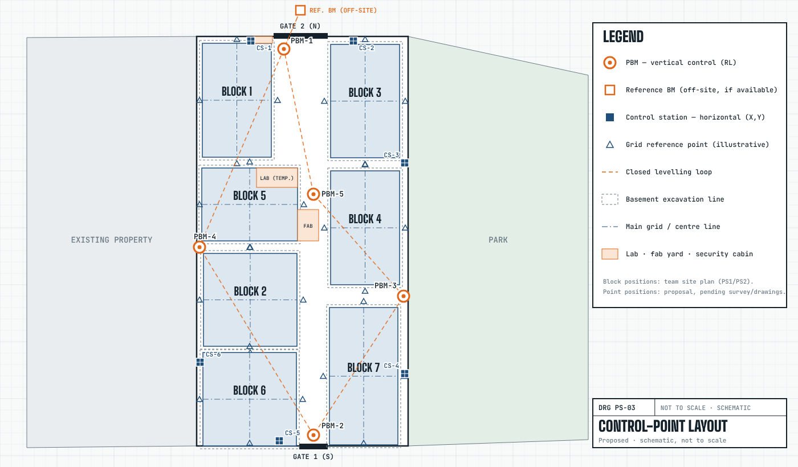
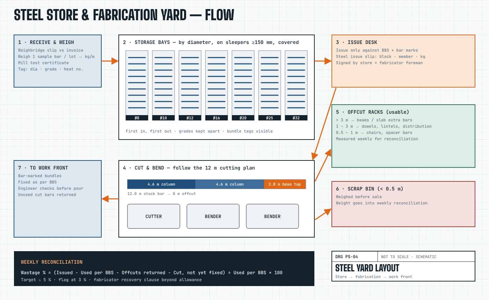
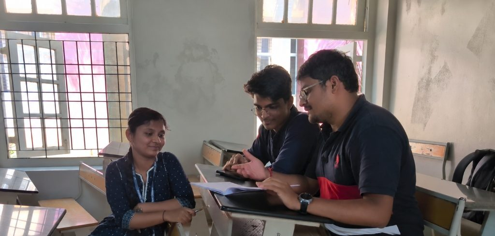

Civil Engineering · Portfolio
AprameySharad Doddamani
Builds on paper first. Site layouts, materials, labour and concrete quality, worked out before the first pour.
With the team at the ESS RMC plant, Hubballi · 20 Aug 2026
About
The part of construction that happens before the first pour.
I'm Apramey, studying civil engineering at KLE Technological University. This site collects my work from the Construction Management Workshop, where each problem statement puts us in the shoes of a project engineer on a real-sized job: a seven-block shopping mall on eight acres in Hubballi, with three levels of underground parking and about 12,000 m³ of concrete.
The workshop is about the problems the syllabus skips: approvals, labour camps, gate registers, bar bending schedules, labour contracts and what to do when cube tests fail. Each sheet is a worked solution, written so a site team could use it.
Construction Management Workshop
Six problem statements, one project.
Gain experience by solving the simulated problems project engineers and managers face on site. One project runs through all six sheets, worked as a team of four.

02Material ManagementIndent-to-payment workflow with a QC hold, GRN for accepted quantity, material-specific storage and a PO–GRN–invoice match.Read sheet →
03Survey & BenchmarksBenchmarks vs control stations, a control-point register, bundled consultant visits with a fair cost comparison, and reasons to outsource.Read sheet →
04Steel & Formwork ControlBBS workflow, hybrid ordering, issue and reconciliation targeting 5% steel wastage; member grouping and a reuse SOP aiming for 10 cycles.Read sheet →
05Labour Force PlanningTrade-wise man-days with helpers, a stage-based histogram levelled within float, corrected Zone 2 wages and a contract checklist.Read sheet → 06Cube Test FailuresWhat the 23 failed column results do and do not prove, a 15-cause investigation matrix, a decision pathway and a recurrence-reduction QC plan.Read sheet →Field journal · Hubballi, Aug 2026
From the field.
Two site visits on 20 August 2026, a building site and an RMC plant with its testing lab, plus the team meetings either side. Location stamps have been cropped from every photo.


Document library
22 sample documents, sorted by role.
From identity and title to khata, NOCs and the soil report, the formats the team studied for pre-construction due diligence. Samples only, not this project's records.
Open the libraryThanks for reading.
Construction Management Workshop · KLE Technological University · team of four: Karthik Chandrakant Shet, Major Jongkey, Apramey Sharad Doddamani and Vijayalaxmi Shivappa Doddamani.